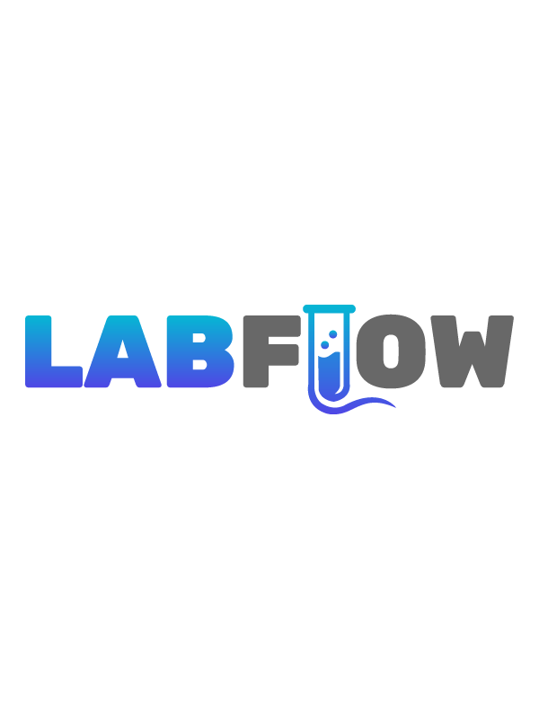

LabFlow: Making Diagnostics Faster and More Efficient
I designed an intuitive operational platform to replace messy spreadsheets and stressful word-of-mouth handoffs. It seamlessly connects sample collection, clinical reviews, and shift changes, allowing medical staff to focus on patients rather than fighting their software.
Feel free to explore the interactive prototype at the bottom of the page.

.jpg)
The Challenge
Step inside Micro Laboratory in Coimbatore during a peak shift, and the tension is palpable. I didn't just see a lab processing thousands of samples; I saw people working on overdrive. I watched stressed technicians frantically juggling scattered spreadsheets, making hurried phone calls, and relying entirely on their memory to ensure nothing slipped through the cracks. It became clear that urgent tasks weren't just getting lost in rows of data—they were burning the staff out.
Walking in Their Shoes
To truly grasp the friction they faced every day, I shadowed the floor staff. Watching the real-time interactions between anxious patients and overwhelmed technicians shifted my entire perspective. The bottlenecks weren't just technical; they were deeply human. Here's what stood out:
1. The Chaos of Parallel Work
Three collection stations operated simultaneously, but staff were constantly tripping over each other in the system. The new platform couldn't just store data; it had to act as a silent coordinator, allowing multiple technicians to log samples concurrently without the fear of overwriting someone else's hard work.
2. The Anxiety of the Unknown
The biggest source of stress was a simple question: "Where is this sample right now?" The goal wasn't just a prettier spreadsheet. It was to build a transparent workspace where anyone could instantly see a sample's journey, bringing peace of mind to the team and the patients waiting for results.
Designing the Solution
When a patient's health is on the line, clinical environments are unforgiving. A critical sample might fail before a doctor even has time to review it. But I also learned that bombarding staff with constant red alerts doesn't help—it just causes them to tune everything out. To design a tool that truly supported these professionals, I let four human-centric constraints guide my architecture.
1. Curing Alert Fatigue
What I did: I created a calm, focused Overview screen that only highlights what desperately needs attention right now (like a sudden quality control failure).
What I avoided: Blinding the staff with a dashboard full of generic charts and flashing lights that spike anxiety without offering a clear next step.
2. Respecting Their Time
What I did: I separated the 'big picture' tracking from the heavy clinical details. The main workflow feels lightweight, allowing doctors to make quick, confident decisions.
What I avoided: Forcing exhausted clinicians to dig through dense, cluttered patient histories just to find a single metric.
3. The 'Pass the Baton' Moment
What I did: Shift changes were notoriously messy. I designed a dedicated 'Shift Handoff' feature that acts as a clean, conversational summary—letting the incoming doctor know exactly what to watch out for.
What I avoided: Leaving behind a cryptic activity log that forces the next person to play detective before they can even start their shift.
4. Building Trust in AI
What I did: Doctors are rightfully skeptical of machines making medical calls. Instead of having AI override them, the system offers gentle, helpful recommendations. The clinician always remains the hero, retaining full control over the final diagnosis.
The Experience
A platform is only as good as the people who use it. For LabFlow to succeed, it had to seamlessly adapt to three very distinct minds: the multitasking lab technician, the hyper-focused reviewing clinician, and the incoming doctor taking the reins. My solution was a unified system that naturally molds itself to whoever is logging in, giving them exactly what they need and nothing they don't.
Status Colors & Typography
I was very intentional with color choices. Instead of using it just to make things look nice, I reserved it entirely to communicate status and urgency. In a screen packed with data, this ensures that the most critical alerts instantly catch the eye.
Typography
Aptos
Status Colors
Grid Framework
- Viewport 1440 x 900 px
- Columns 12 Column
- Type Fluid
- Gutter 24px
- Margin 32px
Workflows Designed for Human Habits
To fix the operational bottlenecks, I couldn't just force a new software structure onto the lab. I had to map the digital workflows directly to how these professionals physically move and think on the floor.
- The Lab Technician (Intake)
- Juggling a dozen incoming vials at once, they need a rapid, error-free way to log samples, assign barcodes, and route them without second-guessing.
- The Reviewing Clinician (Analysis)
- Reviewing hundreds of results a day, they need a distraction-free queue to scan batches, easily validate AI suggestions, and swiftly approve cases.
- The Incoming Clinician (Handoff)
- Stepping into a busy shift, they need a seamless transfer of knowledge, acknowledging critical notes so they can hit the ground running with confidence.
The Result
By shifting the focus from 'managing data' to 'supporting people,' LabFlow does more than track samples—it fundamentally changes the emotional temperature of the lab. It takes the heavy mental lifting off the medical staff, eliminating the panic of lost information and the exhaustion of alert fatigue.
Traceability Maintained
Across all sample lifecycles.
Passive Alert Fatigue
Action-driven UI minimizes visual clutter.
Experience the Flow
Step into their shoes and explore the operational flow for yourself. The prototype below will walk you through the day-in-the-life of the lab staff—from the high-speed intake of parallel sample logging to the reassuring clarity of a clean shift handoff.